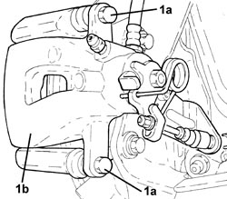
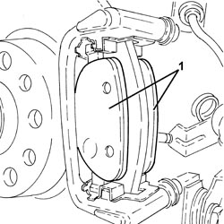
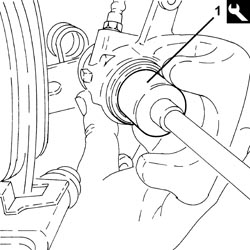

3310B62 REAR BRAKE PADS - REPLACE
- Path
- Procedures > 33 BRAKES > 3310 DISC BRAKES > 3310B REAR DISC BRAKES > 3310B62 REAR BRAKE PADS - REPLACE
- Kind
- repair procedure (removal / refitting; the operation number is the code)
- Applies to
- all engines; all production periods
- Interactive page
- https://sloeber94.github.io/elrnDB-aBrrSpdr/en/#/946002124
Applies to: all engines; all production periods
 Removing
Removing
 Refitting
Refitting- Position the vehicle on a lift.
Op. 4450B13 REAR WHEELS (TWO) - R.R
1. Undo the bolts (1a) and move the rear brake caliper (1b) away from the bracket.

Applies to: all engines; all production periods
1. Remove the rear brake pads.

Applies to: all engines; all production periods
Refitting
Removing1. Use the tool to turn the brake caliper piston anticlockwise to move it back in its housing.
Tool | Description | Function | Validity |
|---|---|---|---|
1856134000 | Spanner | Retract the rear brake calliper pistons |

Applies to: all engines; all production periods
- Replace the new rear brake pads in their seats.
- Position the rear brake caliper in its housing and secure it tightening the bolts to the recommended torque.
Component | Fastening | dia | Value (daNm) | Validity |
|---|---|---|---|---|
Rear brake callipers | Bolt | M8 | 3.1 ÷ 3.8 |
Op. 0010T64 BRAKE AND/OR CLUTCH FLUID CHECK LEVEL AND TOP UP AS NECESSARY
Op. 4450B13 REAR WHEELS (TWO) - R.R
- Remove the vehicle from the lift.
Topics linked from this page (2)
- 0010T64 BRAKE AND/OR CLUTCH FLUID CHECK LEVEL AND TOP UP AS NECESSARY
- 4450B13 REAR WHEELS (TWO) - R.R